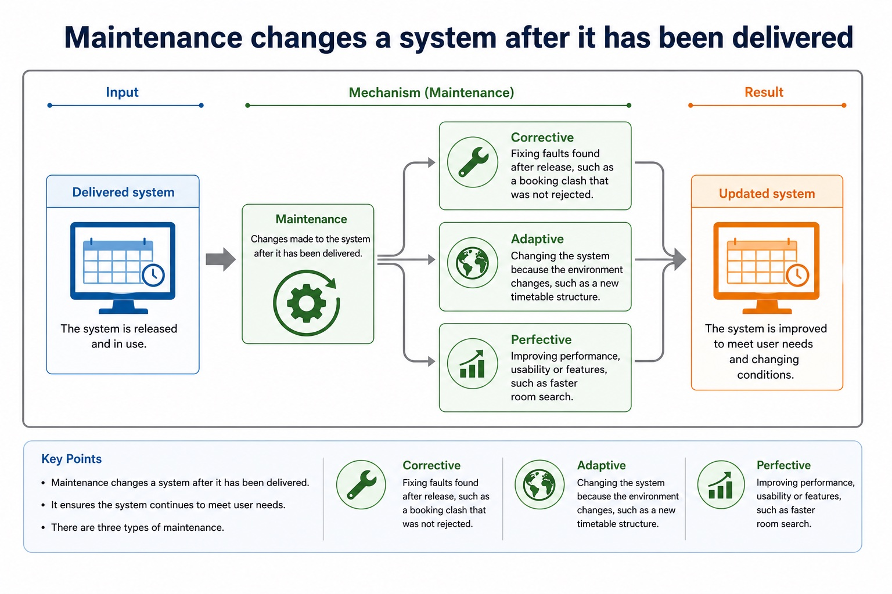

Perfective, adaptive and corrective maintenance
Visual overview
Maintenance changes a system after it has been delivered

Visual transcript
- Maintenance
- Corrective
- Fixing faults found after release, such as a booking clash that was not rejected.
- Adaptive
- Changing the system because the environment changes, such as a new timetable structure.
- Perfective
- Improving performance, usability or features, such as faster room search.
Core explanation
Maintenance continues after delivery because faults are discovered, operating environments and rules change, and users request improvements. Corrective maintenance fixes faults in required behaviour; adaptive maintenance changes software for a new environment, platform, law or external rule; perfective maintenance improves functionality, usability, performance or maintainability.
Classify the reason for the change, not the code edited. The same module could receive a corrective change for a crash, an adaptive change for a new operating-system interface, or a perfective change for faster search and a clearer result display.
Test the enhancement with data that exercises the new path and rerun regression tests for existing paths. Correcting a fault is corrective maintenance; adding or improving requested functionality is an enhancement and may be perfective maintenance.
Every maintenance change requires impact analysis, controlled amendment, tests for the changed behaviour and regression tests for unaffected behaviour. Records should link the request, code change and test evidence.